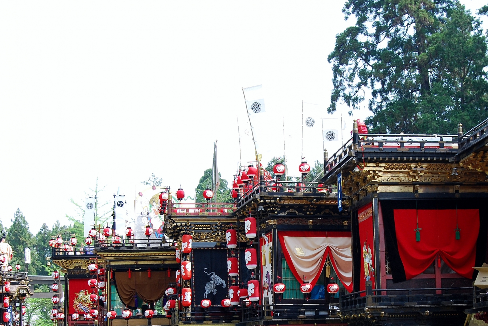
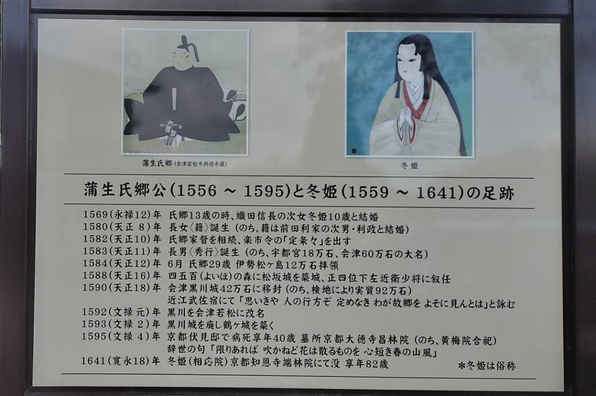

日野祭

 日野祭
日野祭
 日野祭
日野祭
毎年5月2日（宵祭）5月3日（本祭）に行われるお祭りです。
800年以上の歴史があり、馬見岡綿向神社で行われています。
神輿を担いで日野の町を歩いて回るのが特徴的です。
ゴールデンウィークに日野町に来る機会があればぜひ見に来てください。
蒲生氏郷公
家紋
蒲生氏郷公は戦国時代から安土桃山時代にかけての武将です。
織田信長や豊臣秀吉から才能を高く評価されていました。
織田信長の次女と結婚しました。

日野菜

 日野菜漬け
日野菜漬け
 日野菜漬け
日野菜漬け
日野菜は日野町原産でカブの一種です。
漬物にして食べるのが人気で、旬の季節は春と秋です。
天ぷらやローストをして食べられることもあります。
2022年に「近江日野産日野菜」としてGI認定を取得しました。